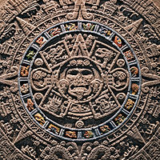

Civilização asteca
Artigo Discussão
Nota: "Império Asteca" redireciona para este artigo. Para a aliança política entre as cidades-Estados, veja Tríplice Aliança Asteca. Para outros significados, veja Asteca (desambiguação).
Os astecas eram uma cultura mesoamericana que floresceu no centro do México no período pós-clássico, de 1300 a 1521. Os povos astecas incluíam diferentes grupos étnicos do México central, particularmente aqueles grupos que falavam a língua náuatle e dominaram grandes partes da Mesoamérica entre os séculos XIV ao XVI. A cultura asteca era organizada em cidades-Estados (altepetl), algumas das quais se juntaram para formar alianças, confederações políticas ou impérios. O Império Asteca era uma confederação de três cidades-Estados estabelecida em 1427, Tenochtitlan (cidade-Estado dos mexicas), Texcoco e Tlacopan, anteriormente parte do império dos tepanecas, cujo poder dominante era o Azcapotzalco. Embora o termo astecas seja restrito aos mexicas de Tenochtitlan, também é amplamente usado para se referir a comunidades ou povos náuatles do México central na era pré-hispânica,[1] bem como a era colonial espanhola (1521-1821).[2] A definição dos astecas tem sido o tema da discussão acadêmica, desde que o cientista alemão Alexander von Humboldt estabeleceu seu uso comum no início do século XIX.[3]
A maioria dos grupos étnicos do México central, no período pós-clássico, compartilhava traços culturais básicos da Mesoamérica e muitas das características da cultura asteca não podem ser consideradas exclusivas deste povo. Pela mesma razão, a noção de "civilização asteca" é melhor entendida como um horizonte particular de uma civilização geral da Mesoamérica. A cultura do México central inclui o cultivo de milho, a divisão social entre nobreza (pipiltin) e plebeus (macehualtin), um panteão (caracterizando Tezcatlipoca, Tlaloc e Quetzalcoatl) e o sistema calendárico de um xiuhpohualli de 365 dias intercalado com um tonalpohualli de 260 dias. O deus patrono Huitzilopochtli, construções de pirâmides gêmeas e o artigo cerâmico conhecido como Astecas I a III são particulares dos mexicas de Tenochtitlan.[4]
No século XIII, o Vale do México era o coração de uma população densa e da ascensão das cidades-Estados. Os mexicas chegaram atrasados ao vale e fundaram a cidade de Tenochtitlan em ilhotas pouco promissoras no lago Texcoco, tornando-se depois o poder dominante da Tríplice Aliança Asteca (ou Império Asteca). Era um império tributário que expandiu sua hegemonia política muito além do Vale do México, conquistando outras cidades-Estados da Mesoamérica no final do período pós-clássico. Originou-se em 1427 como uma aliança entre as cidades Tenochtitlan, Texcoco e Tlacopan, as quais se aliaram para derrotar o Estado tepaneca de Azcapotzalco, que anteriormente havia dominado a bacia do México. Logo, Texcoco e Tlacopan foram relegadas a uma parceria menor dentro da aliança, com Tenochtitlan se tornando o poder dominante. O império ampliou seu alcance por uma combinação de comércio e conquista militar. Nunca foi um verdadeiro império territorial controlando um território através de grandes guarnições militares em províncias conquistadas, mas dominava suas cidades-Estados clientes principalmente ao implantar governantes amistosos conquistados, construindo alianças matrimoniais entre as dinastias governantes e estendendo uma ideologia imperial às suas cidades,[5] que prestavam homenagem ao imperador asteca, o Huey Tlatoani. Esta estratégia econômica limitava a comunicação e o comércio entre os sistemas periféricos, tornando-os dependentes do centro imperial para a aquisição de bens de luxo.[6] A influência política do império alcançou o sul, como Chiapas e Guatemala, e abarcou a Mesoamérica, do Pacífico ao Atlântico.
O império atingiu sua extensão máxima em 1519, pouco antes da chegada de um pequeno grupo de conquistadores espanhóis liderados por Hernán Cortés, que se aliou a cidades-Estados inimigas dos mexicas, particularmente Tlaxcalteca, bem como a outras organizações políticas mexicas, incluindo Texcoco, sua antiga aliada na Tríplice Aliança. Após a queda de Tenochtitlán em 13 de agosto de 1521 e a captura do imperador Cuauhtemoc, os espanhóis fundaram a Cidade do México sobre as ruínas da antiga capital asteca. De lá, eles prosseguiram com o processo de conquista e incorporação dos povos mesoamericanos ao Império Espanhol. Com a destruição da superestrutura do Império Asteca em 1521, os espanhóis utilizaram as cidades-Estados sobre as quais o Império Asteca foi construído para governar as populações indígenas por meio de seus nobres locais. Esses nobres prometeram lealdade à coroa espanhola e converteram-se, ao menos nominalmente, ao cristianismo, em troca de serem reconhecidos como nobres pelos espanhóis. Os nobres atuaram como intermediários para transmitir tributos e mobilizar o trabalho para seus novos senhores, facilitando o estabelecimento do domínio colonial espanhol.[7]
A cultura e a história astecas são conhecidas principalmente por evidências arqueológicas encontradas em escavações como a do renomado Templo Mayor na Cidade do México; de escritos indígenas; relatos de testemunhas oculares de conquistadores espanhóis, como Cortés e Bernal Díaz del Castillo; e especialmente das descrições de cultura e história astecas dos séculos XVI e XVII escritas por clérigos espanhóis e astecas letrados em espanhol ou náuatle, como o famoso, ilustrado e bilíngue (espanhol e náuatle) Códice florentino, composto em doze volumes, criado pelo frade franciscano Bernardino de Sahagún, em colaboração com informantes indígenas astecas. Importante para o conhecimento dos náuatles após a conquista europeia foi o treinamento de escribas indígenas para criar textos alfabéticos em náhuatl, principalmente para ajudar no processo de domínio colonial espanhol. No seu auge, a cultura asteca teve tradições mitológicas e religiosas ricas e complexas, bem como alcançou notáveis realizações arquitetônicas e artísticas.
Definição
As palavras náuatles aztecatl (no singular) e aztecah (no plural)[8] significam "povo de Aztlan",[9] um lugar mítico de origem para vários grupos étnicos na Mesoamérica. O termo não era usado como um endônimo pelos próprios astecas, mas é encontrado nos diferentes contos de migração dos mexicas, que descrevem as diferentes tribos que deixaram Aztlan juntas. Em um relato da jornada de Aztlan, Huitzilopochtli, a divindade tutelar da tribo dos mexicas, diz a seus seguidores que "agora, seu nome não é mais o Azteca, você é agora Mexitin [Mexica]".[10]
No uso atual, o termo "asteca" geralmente se refere exclusivamente ao povo mexica de Tenochtitlan (atual Cidade do México), situada em uma ilha no Lago Texcoco, mas eles se referiam a si mesmos como mēxihcah, tenochcah ou cōlhuah.[11][12][nb 1][nb 2]
Às vezes, o termo também inclui os habitantes das duas principais cidades aliadas de Tenochtitlan, as acolhuas de Texcoco e os tepanecas de Tlacopan, que junto com os astecas formaram a Tríplice Aliança Asteca, que controlava o que é muitas vezes conhecido como o "Império Asteca". O uso do termo "asteca" para descrever o império centrado em Tenochtitlan foi criticado por Robert H. Barlow, que prefere o termo "culhua-mexica",[11][13] e por Pedro Carrasco, que prefere o termo "império tenochca".[14] Carrasco escreve que o termo asteca "não é útil para entender a complexidade étnica do México antigo e para identificar o elemento dominante na entidade política que estamos estudando".[14]
Em outros contextos, "asteca" pode se referir a todas as várias cidades-Estados e seus povos, que compartilhavam grande parte de sua história étnica e traços culturais com astecas, acolhuas e tepanecas, e que frequentemente também usavam a língua náuatle como língua franca. Um exemplo está na obra Law and Politics in Aztec Texcoco de Jerome A. Offner.[15] Nesse sentido, é possível falar sobre uma "civilização asteca", incluindo todos os padrões culturais específicos comuns à maioria dos povos que habitavam o centro do México no final do período pós-clássico.[16] Tal uso pode também estender o termo "asteca" a todos os grupos no México Central que foram incorporados culturalmente ou politicamente na esfera de domínio do Império Asteca.[17][nb 3]
Quando usado para descrever grupos étnicos, o termo "asteca" refere-se a vários povos de língua náuatle do México central no período pós-clássico da cronologia mesoamericana, especialmente os mexicas, o grupo étnico que teve um papel importante no estabelecimento do império hegemônico baseado em Tenochtitlan. O termo se estende a outros grupos étnicos associados ao império asteca, como os acolhuas, o tepanecas e outros que foram incorporados ao império. Charles Gibson enumera vários grupos no México central que ele inclui em seu estudo The Aztecs Under Spanish Rule (1964). Estes incluem culhuaques, cuitlahuaques, mixquicas, xochimilcas, chalcas, além dos tepanecas, acolhuaques e mexicas.[18]
Em usos mais antigos, o termo era comumente usado para se referir aos grupos étnicos modernos falantes de náuatle, já que o idioma era anteriormente chamado de "língua asteca". No uso recente, esses grupos étnicos são referidos apenas como náuatles.[19][20] Linguisticamente, o termo "asteca" ainda é usado sobre o ramo das línguas uto-astecas (também às vezes chamadas de línguas yuto-nahuan), que inclui a língua náuatle e seus parentes mais próximos, pochutec e pipil.[21]
Alexander von Humboldt originou o uso moderno de "asteca" em 1810, como um termo coletivo aplicado a todas as pessoas ligadas pelo comércio, costumes, religião e idioma ao Estado mexica e à Tríplice Aliança. Em 1843, com a publicação do trabalho de William H. Prescott sobre a história da conquista do México, o termo foi adotado pela maior parte do mundo, incluindo por estudiosos mexicanos do século XIX, que o viam como uma maneira de distinguir os mexicanos da atualidade dos mexicas da era pré-conquista. Este uso tem sido objeto de debate, mas o termo "asteca" é ainda mais comum.[12]
História
|  | ||
| Civilização Asteca | ||
|---|---|---|
| Sociedade Asteca | Lingua náuatle | |
| Religião | Mitologia | Filosofia |
Ver artigo principal: História dos astecas
Fontes de conhecimento
Ver artigo principal: Códices astecas
O conhecimento da sociedade asteca se baseia em várias fontes diferentes: os muitos vestígios arqueológicos, de pirâmides de templos a cabanas de colmo, podem ser usados para entender os muitos aspectos do que era a sociedade asteca. No entanto, os arqueólogos geralmente precisam confiar no conhecimento de outras fontes para interpretar o contexto histórico dos artefatos. Muitos textos escritos por indígenas e espanhóis produzidos no início do período colonial são fontes inestimáveis de informações sobre a história asteca pré-colonial. Esses textos fornecem muitas informações sobre as histórias políticas das várias cidades-Estados astecas e de suas dinastias dominantes. Tais histórias foram produzidas em códices pictóricos. Alguns desses manuscritos eram inteiramente pictóricos, geralmente com glifos. No período pós-conquista, muitos outros foram escritos em latim, seja por letrados astecas, seja por frades espanhóis que entrevistaram os nativos sobre seus costumes e histórias. Um importante texto pictórico e alfabético produzido no início do século XVI foi o Códice Mendoza, nomeado em homenagem ao primeiro vice-rei do México e talvez por ele encomendado, para informar a coroa espanhola sobre a estrutura política e econômica do Império Asteca, contendo informação nomeando as políticas que a Tríplice Aliança Asteca conquistou, os tipos de tributo prestados ao Império Asteca, bem como sobre estrutura de classe e gênero deste povo. Muitos anais escritos existem, escritos por historiadores locais náuatles que registraram as histórias de sua política. Estes anais utilizaram histórias pictóricas e transformaram-se em versões textuais alfabéticas em escrita latina.[22]
Muitos frades espanhóis também produziram documentação em crônicas ou outros tipos de contas. De importância fundamental é Toribio de Benavente Motolinia, um dos primeiros doze franciscanos que chegaram ao México em 1524. Outro franciscano de grande importância foi Frei Juan de Torquemada, autor de Monarquia Indiana. O dominicano Diego Durán também escreveu extensivamente sobre a religião pré-hispânica, bem como uma história dos mexicas.[23] Uma fonte inestimável de informações sobre o pensamento religioso, estrutura política e social dos astecas, bem como da história da conquista espanhola do ponto de vista mexicano é o Códice Florentino. Produzido entre 1545 e 1576 na forma de uma enciclopédia etnográfica escrita em espanhol e náuatle, pelo franciscano Bernardino de Sahagún e escribas indígenas, ele contém conhecimento sobre muitos aspectos da sociedade pré-colonial, como religião, calendários, botânica, zoologia, comércio, artesanato e história.[24][25] Outra fonte de conhecimento são as culturas e os costumes dos falantes de náuatle contemporâneos, que muitas vezes podem fornecer indícios sobre como era a vida pré-hispânica. O estudo acadêmico da civilização asteca é mais frequentemente baseado em metodologias científicas e multidisciplinares, combinando conhecimento arqueológico com informações etno-históricas e etnográficas.[26]
México central no clássico e pós-clássico
| O Vale do México |
|---|
| Localizações das principais |
| Cidades-Estados em 1519 |
É uma questão de debate se a enorme cidade de Teotihuacan já era habitada por falantes de náuatle ou se eles ainda não haviam chegado ao centro do México no período clássico. É geralmente aceito que os povos náuatles não eram nativos das terras altas do centro do México, mas migraram gradualmente para a região a partir de algum lugar no noroeste. Após a queda de Teotihuacan, no século VI, várias cidades chegaram ao poder na região central do México, algumas delas, incluindo Cholula e Xochicalco, provavelmente habitadas por falantes de náuatle. Um estudo sugeriu que os náuatles originalmente habitavam a área de Bajío em torno de Guanajuato, que atingiu um pico populacional no século VI, após a população diminuir rapidamente durante um período seco subsequente. Este despovoamento do Bajío coincidiu com uma incursão de novas populações no Vale do México, o que sugere que isto marca o influxo de falantes de náuatle para a região.[27] Estes povoaram o centro do México, deslocando os falantes das línguas otomangues, enquanto espalhavam a sua influência política ao sul. Conforme os antigos povos nômades de caçadores-coletores misturavam-se com as complexas civilizações da Mesoamérica, adotando práticas religiosas e culturais, a base para a posterior cultura asteca estava a ser moldada. Depois do ano 900, durante o período pós-clássico, vários locais quase certamente habitados por falantes de náuatle se tornaram poderosos. Entre eles, o local de Tula, em Hidalgo, e também cidades como Tenayuca e Colhuacan, no Vale do México, e Cuauhnahuac, em Morelos.[28]
Migração mexica e fundação de Tenochtitlan
Nas fontes etno-históricas do período colonial, os próprios mexicas descrevem sua chegada ao Vale do México. O etnônimo "asteca" (Nahuatl Aztecah) significa "povo de Aztlan", sendo Aztlan um lugar mítico ao norte. Daí o termo foi aplicado a todos aqueles povos que reivindicaram serem herdeiros deste lugar mítico. As histórias de migração da tribo mexica contam como eles viajaram com outras tribos, incluindo a tlaxcaltecas, tepanecas e acolhuas, mas que eventualmente sua divindade tribal Huitzilopochtli disse que eles deveriam se separar das outras tribos astecas e assumirem o nome de "mexicas".[29] Na época de sua chegada, havia muitas cidades-Estados astecas na região. As mais poderosas eram Colhuacan ao sul e Azcapotzalco a oeste. Os tepanecas de Azcapotzalco logo expulsaram os mexicas de Chapultepec. Em 1299, o governante de Colhuacan, Cocoxtli, deu-lhes permissão para se estabelecerem nos barracos vazios de Tizapan, onde acabaram sendo assimilados pela cultura de Culhuacan.[30] A nobre linhagem de Colhuacan traçava suas raízes até a lendária cidade-estado de Tula e, ao se casar com famílias colhua, os mexicas se apropriaram desta herança. Depois de viver em Colhuacan, os mexicas foram novamente expulsos e foram forçados a se mudarem.[31]
De acordo com a lenda asteca, em 1323 os mexicas tiveram uma visão de uma águia empoleirada em um cacto de figo-do-diabo, enquanto comia uma cobra, indicando o local onde eles deveriam construir seu assentamento. Os mexicas fundaram Tenochtitlan em uma pequena ilha pantanosa no Lago Texcoco, o lago interior da Bacia do México. O ano de fundação é geralmente tido como 1325. Em 1376, a dinastia real dos mexicas foi fundada quando Acamapichtli, filho de um pai mexica e de uma mãe colhua, foi eleito como o primeiro Huey Tlatoani de Tenochtitlan.[32]
Primeiros governantes mexicas
| Acamapichtli, Códice Tovar |
Nos primeiros cinquenta anos após a fundação da sua dinastia, os mexicas eram afluentes de Azcapotzalco, que havia se desenvolvido para uma grande potência regional sob o governante Tezozomoc. Os mexicas forneciam os guerreiros tepanecas para suas campanhas de sucesso na conquista da região e recebiam parte dos impostos das cidades-Estados conquistadas. Desta forma, a posição política e a economia de Tenochtitlan cresceram gradualmente.[33]
Em 1396, com a morte de Acamapichtli, seu filho Huitzilihuitl (náuatle: "Pena do beija-flor") tornou-se governante; por ser casado com a filha de Tezozomoc, a relação com Azcapotzalco permaneceu próxima. Chimalpopoca (náuatle: "Ela fuma como um escudo"), filho de Huitzilihhuitl, tornou-se governante de Tenochtitlan em 1417. Em 1418, Azcapotzalco iniciou uma guerra contra
| Itzcóatl, Códice Tovar |
os acolhuas de Texcoco e matou seu governante, Ixtlilxochitl. Embora Ixtlilxochitl fosse casado com a filha de Chimalpopoca, o governante mexica continuava apoiando Tezozomoc. Tezozomoc morreu em 1426 e seus filhos começaram uma luta pelo governo de Azcapotzalco. Durante esta luta pelo poder, Chimalpopoca morreu, provavelmente morto pelo filho de Tezozomoc, Maxtla, que o via como um adversário.[34] Itzcoatl, irmão de Huitzilihhuitl e tio de Chimalpopoca, foi eleito o tlatoani seguinte. Os mexicas estavam agora em guerra aberta com Azcapotzalco e Itzcoatl solicitou uma aliança com Nezahualcóyotl, filho do governante da região, Ixtlilxochitl, contra Maxtla. Itzcoatl também se aliou ao irmão de Maxtla, Totoquihuaztli, governante da cidade tepaneca de Tlacopan. A Tríplice Aliança de Tenochtitlán, Texcoco e Tlacopan sitiou Azcapotzalco e, em 1428, destruiu a cidade e sacrificou Maxtla. Com esta vitória, Tenochtitlan converteu-se na cidade-Estado dominante no Vale do México e a aliança entre as três cidades-Estados forneceu a base sobre a qual o Império Asteca foi construído.[35]
Itzcoatl procedeu assegurando uma base de poder para Tenochtitlan, conquistando as cidades-Estados no lago do sul - inclusive Culhuacan, Xochimilco, Cuitlahuac e Mizquic. Estes Estados tinham uma economia baseada na agricultura chinampa altamente produtiva, cultivando extensas terras de solo rico no raso lago Xochimilco. Itzcoatl empreendeu então conquistas adicionais no vale de Morelos, enquanto submetia a cidade-Estado de Cuauhnahuac (hoje Cuernavaca).[36]
Primeiros governantes do Império Asteca
Primeiros governantes do Império Asteca
Moctezuma I Ilhuicamina
| Itzcóatl, Códice Tovar |
Em 1440, Moctezuma I Ilhuicamina[nb 4] (náuatle: "ele franze a testa como um lorde, atira no céu"[nb 5]) foi eleito tlatoani; ele era filho de Huitzilihhuitl, irmão de Chimalpopoca e serviu como líder de guerra de seu tio Itzcoatl na guerra contra os tepanecas. A adesão de um novo governante na cidade-Estado dominante foi muitas vezes uma ocasião para as cidades sujeitas se rebelarem, recusando-se a pagar tributos. Isso significava que novos governantes começavam seu governo com uma campanha de coroação, muitas vezes contra os rebeldes, mas também para demonstrar seu poderio militar ao fazer novas conquistas. Moctezuma testou o comportamento das cidades ao redor do vale, ao solicitar trabalhadores para a ampliação do Grande Templo de Tenochtitlan. Apenas a cidade de Chalco se recusou a fornecer trabalhadores e as hostilidades entre Chalco e Tenochtitlan persistiriam até a década de 1450.[37][38] Moctezuma então reconquistou as cidades no vale de Morelos e Guerrero e depois empreendeu novas conquistas na região de Huaxtec, no norte de Veracruz, na região Mixtec de Coixtlahuaca, em grande parte de Oaxaca e depois, novamente, no centro e no sul de Veracruz, com conquistas em Cosamalopan, Ahuilizapan e Cuetlaxtlan.[39] Durante este período, as cidades-Estados de Tlaxcallan, Cholula e Huexotzinco surgiram como as principais concorrentes para a expansão imperial e forneceram guerreiros para várias das cidades conquistadas. Moctezuma, portanto, iniciou um período de guerra de baixa intensidade contra estas três cidades, encenando pequenas escaramuças chamadas "Guerras das Flores" (Nahuatl xochiyaoyotl) contra elas, talvez como uma estratégia de exaustão.[40][41]
Moctezuma também consolidou a estrutura política da Tríplice Aliança e a organização política interna de Tenochtitlan. Seu irmão Tlacaelel atuou como seu principal conselheiro (Nahuatl Cihuacoatl) e ele é considerado o arquiteto de grandes reformas políticas neste período, consolidando o poder da classe nobre (Nahuatl pipiltin), instituindo um conjunto de códigos legais e a prática de reintegrar governantes conquistados alinhados aos astecas em suas cidades.[42][43][40]